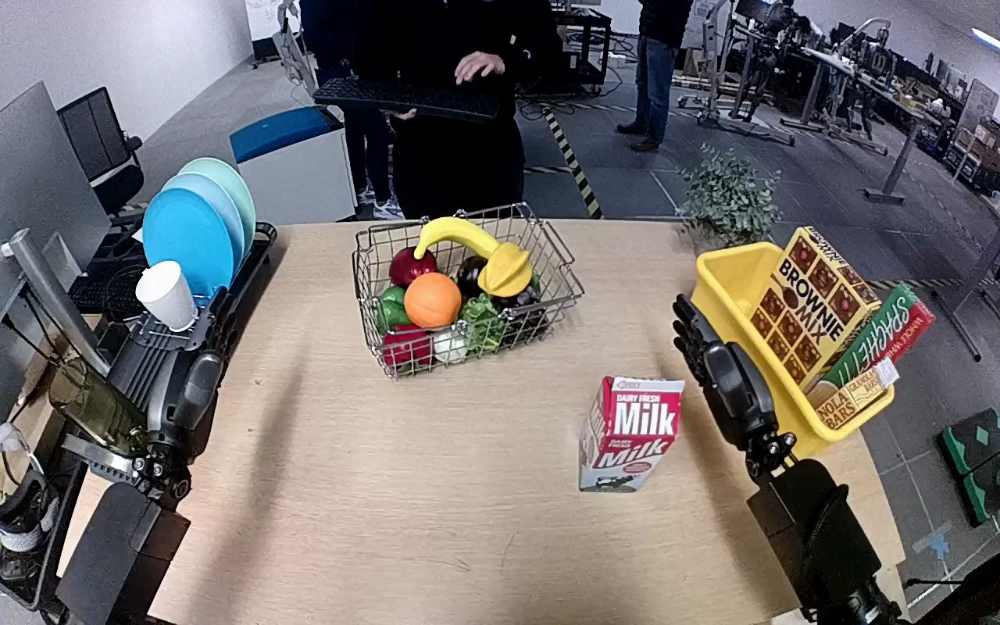

NVIDIA GR1 · 34
Video 34

Visual review action_review.json
{
"prompt_protocol": "humanoid_action_v1",
"prompt_provenance": "visually_authored_from_video_and_initial_frame",
"reviewed_contact_sheets": [
"sheet_001.jpg"
],
"inspected_frame_stride": 2,
"inspected_sampled_frame_count": 60,
"initial_scene": "A red-and-white milk carton stands on the near-right tabletop, in front of a yellow bin containing tall food boxes. Both robot forearms enter the foreground; the left hand remains open beside the dish rack, and the right hand begins open near the bin.",
"observed_sequence": [
{
"start_frame": 0,
"end_frame": 31,
"observation": "The carton stands upright on the tabletop; both robot hands are open and remain apart from it. A person moves near the dish rack without touching the task object.",
"confidence": "high"
},
{
"start_frame": 32,
"end_frame": 49,
"observation": "The right hand moves inward from beside the yellow bin and surrounds the carton; its fingers and thumb close around opposite sides. The left hand remains idle beside the dish rack.",
"confidence": "high"
},
{
"start_frame": 50,
"end_frame": 71,
"observation": "The right hand tightens and adjusts its grasp while keeping the carton upright near its original tabletop position.",
"confidence": "high"
},
{
"start_frame": 72,
"end_frame": 89,
"observation": "The right arm lifts the carton clear of the tabletop and carries it upright toward and above the yellow bin.",
"confidence": "high"
},
{
"start_frame": 90,
"end_frame": 113,
"observation": "The right hand positions the held carton over the bin among the pre-existing food boxes and lowers it toward the interior.",
"confidence": "high"
},
{
"start_frame": 114,
"end_frame": 119,
"observation": "The right fingers open; the carton descends and tips among the boxes inside the yellow bin. The final frame shows the carton tilted within the bin under the open right hand.",
"confidence": "high"
}
],
"arm_hand_roles": {
"right": "Sole manipulating hand: grasps, lifts, carries, lowers and releases the milk carton into the yellow bin.",
"left": "Remains open beside the dish rack throughout; does not grasp the carton or stabilize the bin.",
"coordination": "Single-hand manipulation with no hand-to-hand transfer or person-object interaction."
},
"anatomical_side_evidence": {
"confidence": "medium-high",
"evidence": "The initial image shows paired forearms projecting forward from the near side of the table in a forward-looking camera view. Their mirrored thumb placement is consistent with the hand entering the lower-right foreground being the anatomical right hand, and the lower-left hand being the left. The visible proximal forearm geometry and inward thumb positions support this mapping; the source instruction also identifies the active hand as right. Shoulders and torso are outside the image."
},
"evidence_frame_indices": [
0,
40,
58,
70,
88,
110,
114,
116,
118,
119
],
"uncertainties": [
"The final carton is visibly released and tilted inside the bin, but its eventual settled pose and exact bottom contact are not shown; surrounding boxes occlude part of the interior.",
"The torso and shoulder attachments are outside the image; anatomical mapping uses forward-projecting paired forearms and hand chirality rather than a visible full body."
],
"annotation_discrepancies": [
"The instruction specifies the center of the bin; visible release is inside the bin among existing boxes, and precise centered placement cannot be established."
],
"selected_execution_status": "success",
"outcome_basis": "The carton is lifted from the tabletop and visibly released inside the yellow bin; successful placement is limited to this observed transfer, without asserting precise centering or a settled upright pose.",
"terminal_state": "The right hand is open above the yellow bin. The released milk carton is tilted inside the bin among the food boxes; the left hand remains open beside the dish rack.",
"video_id": "34",
"dataset": "NVIDIA_GR1_100",
"dedicated_review_agent": "review_gr1_34",
"review_source_video": "NVIDIA_GR1_100/34/original/original.mp4",
"source_frame_count": 120,
"source_fps": 20.0,
"native_detail_frames": [
40,
58,
70,
88,
110,
114,
116,
118,
119
],
"world_model_prompt": "The robot uses its right hand to grasp the red-and-white milk carton standing on the tabletop and lift it upright. It carries the carton over the yellow bin, lowers it among the boxes, and opens its fingers, leaving the carton tilted inside the bin beneath its open hand. Keep the camera fixed; preserve robot geometry, physically valid joint motion, and normal gripper opening and closing.",
"original_task_instruction": "Use the right hand to pick up red milk carton from right side of tan table to center of yellow bin.",
"selected_segment": {
"start_frame": 0,
"end_frame_exclusive": 120,
"reason": "Complete original single-task reference; no cropping or trimming requested."
},
"source_video_sha256": "d9435abaa88db08fd3c2db3d1603dd4304ff95caeb81ae4dad21365a75a5e8c1",
"review_completed_at": "2026-10-13T18:00:20.398095+00:00"
}